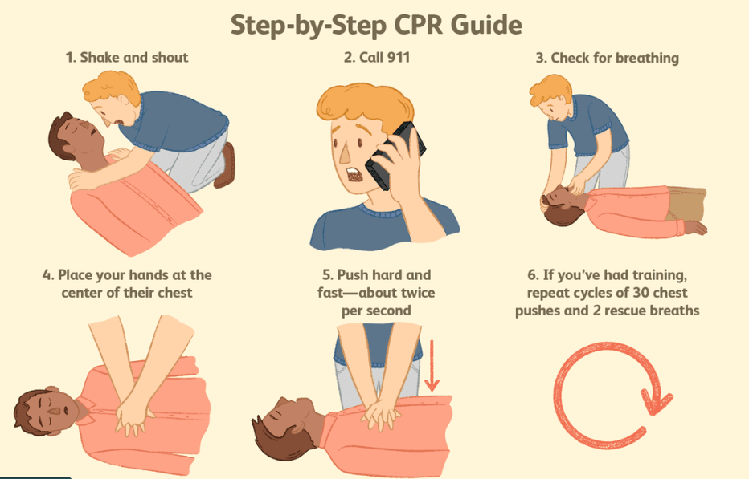

Knowing how to perform CPR can save a life in critical moments. Below are 5 simple and effective steps to follow when someone is unconscious and not breathing.
Basic CPR (Cardiopulmonary Resuscitation)
1.Shake and shout
Gently tap/shake the person's shoulder. Shout, “Are you OK?” to check for responsiveness.
Tepuk/goncangkan bahu mangsa perlahan. Jerit, “Awak okay tak?” untuk semak tindak balas.
2.Call 911
If there's no response, immediately call emergency services (911).
Jika tiada balasan, segera hubungi nombor kecemasan.
3.Check for breathing
Look for the chest movement and listen for breathing for 5-10 seconds.
Perhatikan pergerakan dada mangsa dan dengar bunyi pernafasan selama 5-10 saat.
4.Place your hands at the center of their chest
Place the heel of your hand in the center of the chest.
Letakkan tangan anda di tengah dada mangsa.
5.Push hard and fast
Compress at least 2 inches (5 cm) deep, at a rate of 100–120 compressions per minute.
Tekan sekurang-kurangnya 5 cm dalam, pada kadar 100–120 kali seminit.
6.Full CPR If Trained
If you’re trained, do cycles of 30 chest compressions and 2 rescue breaths. Continue until help arrives.
Jika anda terlatih, buat kitaran 30 tekanan dada dan 2 hembusan mulut ke mulut. Teruskan sehingga bantuan tiba.